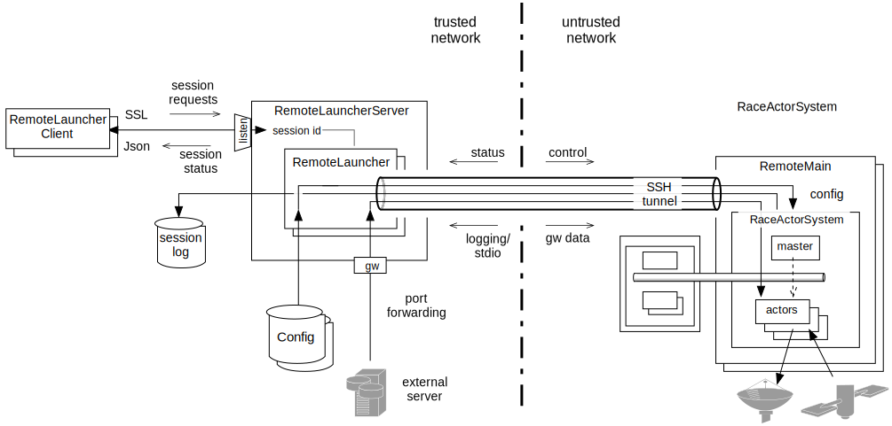

RemoteLauncher
The RemoteLauncher infrastructure allows to securely start, monitor and control remotely running RACE processes through SSH, and to manage global resources such as configuration files and user ids in one location.
While the ConsoleMain and SwingMain drivers are used to interactively run RACE processes
on a local machine, RACE also supports a scenario in which complex simulations are executed on a
pool of (remote and/or virtual) machines. Moreover, these machines might be connected over untrusted
networks, and might not have access to sensitive or frequently changed configuration data.
The user id for the remotely running RACE does not have to correspond to the physical user requesting/controlling the simulation, which not only supports a large and changing user base, but also - for security reasons - configuration of remote machines without login prompts.
The main RemoteLauncher components are:
RemoteMain- the remotely running, non-interactive RACE driverRemoteLauncher- the 1:1 counterpart of aRemoteMaininstance on the controlling machine
- ConsoleRemoteLauncher - an interactive front end for a RemoteLauncher on the controlling
machine
- RemoteLauncherServer - a server that manages multiple RemoteLauncher instances and makes them
accessible to external clients such as web applications
- ConsoleLauncherClient - a console based interactive client for the RemoteLauncherServer
The primary mode of operation is to control several RemoteMain instances from a single machine,
therefore ConsoleRemoteLauncher and ConsoleLauncherClient are mostly intended as testing
tools.

The RemoteLauncher uses SSH to start the RemoteMain process with reverse port forwarding for
a socket that is used to transmit control messages that implement a handshake protocol, independently
of the captured remote stdio streams. This protocol between RemoteLauncher and RemoteMain is
implemented in its own traits and can be extended.
The default protocol starts by transmitting a SESSION message with a session specific token from the launcher to the launchee, to which the launchee replies with a LIVE message that contains its process id.
Once the launcher receives this reply, it proceeds to sending a LAUNCH command that contains the
RACE configuration data the RemoteMain should run, which can also include an encrypted config
vault.
Once the RemoteMain is running, the RemoteLauncher can use INSPECT commands to query its
state, and a TERMINATE command to gracefully shut it down.
Since this is a SSH session, the RemoteLauncher can monitor the lifetime of the remote process
without having to rely on the protocol.
In addition to the control socket, the RemoteLauncher can also reverse port forward sockets that connect to external servers which should not be exposed to the remote machine, i.e. it can act as a gateway. Tunneling both control and data sockets through SSH ensures that all content is securely encrypted.